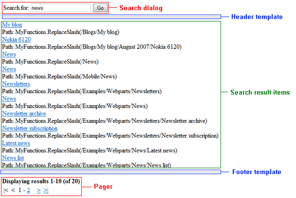

CMSSearchResults
The CMSSearchResults control displays search results according to parameters provided from the CMSSearchDialog control. The controls use the SQL search engine, which utilizes standard queries to find results in the Kentico database.
Note: Current versions of Kentico provide an index-based smart search engine. The smart search has significantly better performance than the SQL search.
The SQL search uses the following queries:
Automatically generated queries for the data of individual page types. To override the search query for a page type, create a new query named searchtree in Page types -> Edit page type -> Queries.
The searchdocuments query of the Root page type for fields that are shared by all pages (such as the document name).
The searchattachments query of the Root page type for files uploaded as page attachments. To search attachments, you need to configure the system as described in Configuring SQL search for attachment files.
The control combines the results of all relevant queries into a single data source and displays the data.
Web part equivalent (portal engine): SQL Search results
Configuration
You can set the following properties for the CMSSearchResults control:
|
Property name |
Description |
Sample value |
|
CacheDependencies |
List of the cache keys on which the control's cached data depends. When the specified cache items change, the control clears its cache. Each item (dependency) must be on one line. If you leave this property empty, the control uses default dependencies. See also: Setting cache dependencies, Configuring caching |
cms.user|all |
|
CacheItemName |
Sets the name of the cache key used to store the control's content. If you leave the value empty, the system generates a default name containing variables, such as the control ID, the selected culture and the name of the user who loaded the page. The system cache is shared by all pages in your application, so cache item names representing different data must be unique globally. If the content displayed by the control depends on variables, such as URL parameters, you can set a custom name dynamically in the page's code behind. See also: Caching the data of page components, Configuring caching |
"mycachename" + |
|
CacheMinutes |
Sets the number of minutes for which the control caches content retrieved from the database.
Allows you to set up caching of content so that the control doesn't have to retrieve content from the database on each request. The caching mechanism uses absolute expiration time. This means that cache items expire after a specified time period even if the page containing the control wasn't requested. See also: Caching the data of page components, Configuring caching |
|
|
CheckPermissions |
Indicates if the control checks the permissions of the user viewing the page. If the value is false (default value) no permissions are checked. If true, the control only loads pages for which the user viewing the page has read permissions. |
|
|
ClassNames |
Specifies which page types the control loads and displays. Identify page types through their code names, separated by semicolons (;). You can use the * wildcard as a substitute for any number of characters. For example Product.* includes the page types Product.Camera, Product.CellPhone, Product.Computer etc. If the property is left empty, the control retrieves all page types by default. In the case of menu and navigation controls, only CMS.MenuItem pages are loaded by default. Note: If the control loads all page types (empty value), only the common data columns from the View_CMS_Tree_Joined view are available in the retrieved data. The specific fields of individual page types are not included. You need to keep this in mind when writing the code of transformations, WHERE conditions, ORDER BY expressions etc. |
"cms.news" |
|
CMSSearchDialogID |
Specifies the ID of the CMSSearchDialog control that provides the search expression and parameters. |
"CMSSearchDialog1" |
|
CombineWithDefaultCulture |
Indicates whether the control loads pages from the website's default culture version if the required pages are not available in the user's selected culture. Only applies if you do not set the TreeProvider property manually. |
|
|
CultureCode |
Specifies the culture code of the pages that the control loads. If not specified, the control automatically uses the preferred culture of the user viewing the page. |
"en-us" |
|
DataSource |
Allows you to manually assign a DataSet or DataTable containing pages for the control to display. You can retrieve the search data in your code using the CMS.DocumentEngine.TreeProvider.Search method: DataSet results = TreeProvider.Search(...);CMSSearchResults1.DataSource = results;CMSSearchResults1.DataBind(); |
|
|
EnablePaging |
Enables the paging of search results. True by default. |
|
|
FilterControl |
Gets or sets the filter control used to limit the data read by the control. |
|
|
FilterName |
Gets or sets the ID of the filter control used to limit the data read by this control. |
|
|
FilterOutDuplicates |
Indicates if the control filters out duplicated (linked) pages from the data. |
|
|
IgnoreTransformations |
Indicates whether the control ignores the TransformationName property and uses the item templates instead. |
|
|
NoResultsLabel |
The label control that the control displays when there are no matching search results. |
|
|
OrderBy |
Gets or sets the ORDER BY clause of the SQL query that the control uses to load data. |
"NewsReleaseDate DESC" |
|
PagerControl |
DataPager object used for the paging of search results. |
|
|
Path |
Limits the content tree path where the control searches. |
|
|
QueryStringKey |
Name of the query string parameter that contains the current page number (if paging is used). |
"pagenumber" |
|
SearchExpression |
Contains the words of the entered search expression. |
|
|
SearchMode |
Search mode - any word, all words or exact phrase. |
"AllWords" |
|
SearchScope |
Indicates whether the control searches:
Only applies if the Path property is empty. |
"SearchAllContent" |
|
SelectOnlyPublished |
If true, the control only loads published pages. |
|
|
SiteName |
Specifies the code name of the Kentico website for which the control loads data. |
|
|
StopProcessing |
If true, the control stops all processing — does not load or display any data or other HTML output. |
|
|
TagKey |
Overrides the SPAN tags generated by the control with a custom tag. |
|
|
TransformationName |
Name of the transformation applied to displayed search results. Enter the transformation name in format <page type code name>.<transformation name>. The default transformation is cms.root.searchresults. |
"cms.searchresults" |
|
WhereCondition |
Gets or sets the WHERE clause of the SQL query that the control uses to loads data. |
" DocumentModifiedWhen > '1/1/2007' " |
The CMSSearchResults control accepts the following query string (URL) parameters:
|
Parameter name |
Description |
Sample value |
|
searchtext |
Contains the search text. |
products |
|
searchmode |
Sets the search mode. |
allwords |
Appearance and styling
The appearance of the CMSSearchResults control is determined by the code of the transformation used to format the result. Alternatively, you can add the following item templates between the tags of the CMSSearchResults control:
|
Item template |
Description |
Sample value |
|
FooterTemplate |
Template rendered above the search results. |
<hr /> |
|
HeaderTemplate |
Template rendered below the search results. |
<hr /> |
|
ItemTemplate |
Template applied to search result items. |

SearchDialog - the CMSSearchDialog control specified by the CMSSearchDialogID property.
HeaderTemplate - this area is defined by the code between the <HeaderTemplate> tags.
Search Result Items - this area displays the search results. Defined by the transformation specified by the TransformationName property (cms.root.searchresults by default) or by the code between the <ItemTemplate> tags if the IgnoreTransformations property is enabled.
FooterTemplate - this area is defined by the code between the <FooterTemplate> tags.
Pager - the built-in DataPager control, which is used for the paging of search results unless you set the EnablePaging property to false. You can access the pager control through the PagerControl property.